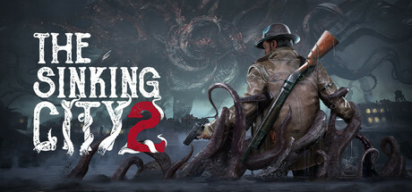

The Sinking City 2
7/10
Avaliado em 04/11/2026 pelo Bora de Play
Zerei em cerca de 10h40. A história e a ambientação lovecraftiana me prenderam, mas a repetição dos inimigos pesou na nota.
Minha opinião
Gráficos
São bons, sem nada de extraordinário, e ajudam muito na ambientação.
Desempenho
No meu PC, rodou liso, sem problemas.
História
A história e a ambientação são os pontos mais fortes. Gosto muito de literatura lovecraftiana e foi justamente isso que mais me prendeu. Queria que o jogo explorasse mais desse universo.
Jogabilidade
É boa no geral. Em alguns pontos, o personagem ficou preso, e a câmera atrapalhou um pouco em raras ocasiões. Também senti falta de mais variedade de inimigos.
Complexidade
As mecânicas são simples e intuitivas.
Dificuldade
Acho que joguei no normal. Alguns monstros deram mais trabalho, mas no geral achei o jogo bem fácil.
Tempo de jogo
Levei cerca de 10 horas e 40 minutos pra zerar. Achei a campanha um pouco curta.
Áudio e trilha
São muito bons. Os sons deixam tudo mais imersivo, principalmente nas áreas escuras e fechadas e nos momentos de tensão.
Bugs
Fora as vezes em que o personagem ficou preso, não encontrei nada que valesse mencionar.
Pra quem eu recomendo
Pra quem curte terror, suspense, investigação e puzzles.
Compensa comprar?
Sim. Pelo preço que vi, já vale a compra sem esperar promoção.
Nota final
7/10. Gostei bastante. A repetição dos inimigos e a vontade de ver mais do universo de Lovecraft pesaram na nota, mas no geral achei um ótimo jogo.